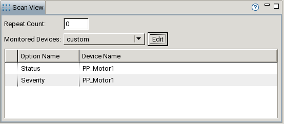
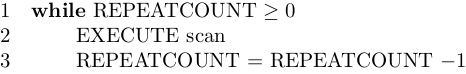
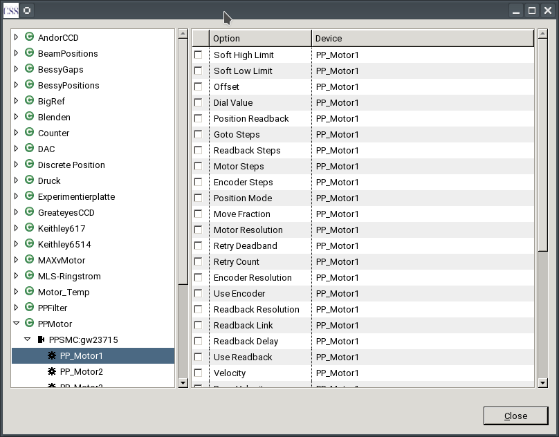

The Scan View contains properties concerning the whole scan. The scan shown is the one selected in the Scan Description Editor (the currently visible Tab).
For a scan the number of times it should be executed and the devices which should be monitored can be set. The currently active monitors are shown in a table.

These properties are described in detal below.
The Repeat Count sets how often the scan should be executed in addition to the first execution. For Example a Repeat Count of 1 would execute the scan one additional time after the first run. Spoken in algorithmic terms:

Possible values are integers in [0, 1, ..., 999999].
Alongside the devices which are used in a scan additional devices of interest could be monitored (its inital value as well as each change is written to the data file). The Scan View offers four types of monitoring:
monitor=true in the device definition are monitoredmonitor=true are monitoredWhen clicking the Edit button a dialog opens where options can be selected for monitoring:

The Dialog contains two parts. On the left there is a tree containing the devices of the device definition ordered by class. The contents of the table on the right depends on the selection in the tree. Multiple selections are possible (using shift click).